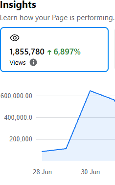
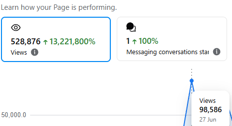
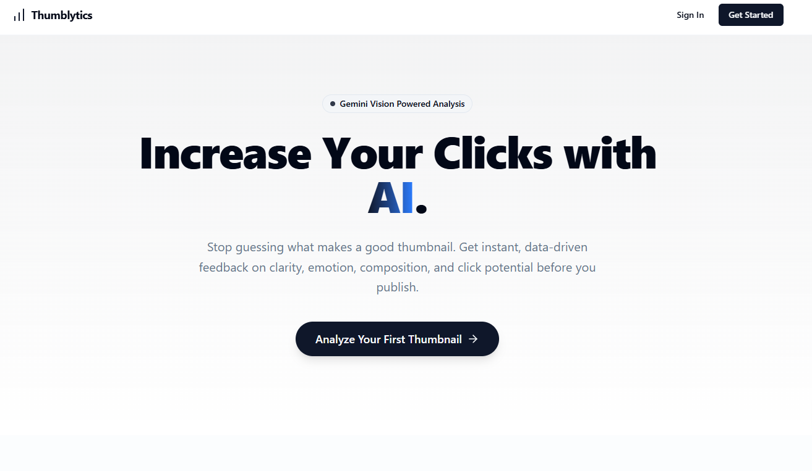

AI Tool Operator & Social Media Content Creator, building systems and content that scale.
I am an AI Tool Operator and Social Media Content Creator with 2+ years of experience, producing content that has garnered millions of views using various AI platforms. Additionally, I use AI for coding basic tools and specialize in WordPress SEO and performance optimization.
Expert in leveraging AI platforms to maximize efficiency and content quality.
Producing viral content with millions of views across various platforms.
Developing basic tools and scripts using AI-assisted coding techniques.
Optimizing content and websites to rank higher on search engines.
Enhancing WordPress performance for lightning-fast load times.


Spearheaded a rapid-growth Facebook video content campaign. Leveraged trend analysis and optimized pacing to achieve viral reach and significant audience growth within a single week.

Assisted social media content creators by implementing an AI-driven tool to analyze thumbnail strengths and weaknesses. Provided actionable insights to drastically improve Click-Through Rates (CTR).
Interested in collaborating on a project or need help optimizing your content strategy? Reach out anytime.